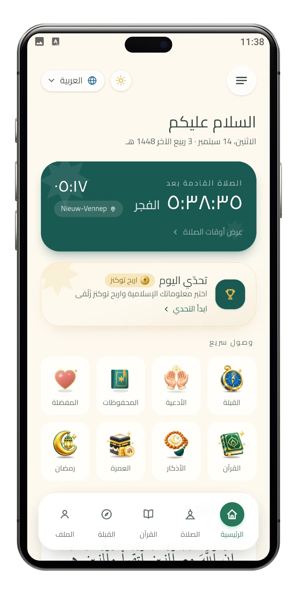
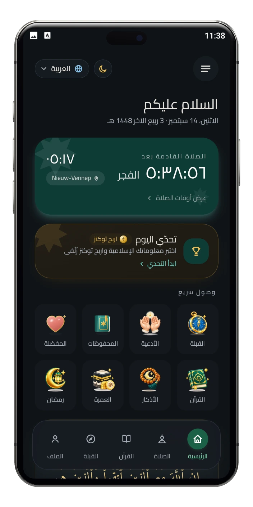

القرآن الكريم
اقرأ النص العثماني كاملًا مع ترجمة إنجليزية، داخل التطبيق نفسه.
- العلامات وتقدّم القراءة
- تلاوة بصوت القارئ الذي تختاره
- التفسير يُحمَّل عند فتحه
زُلْفَى
مواقيت الصلاة والقرآن الكريم والأذكار واتجاه القبلة، تُحسب على جهازك ومعظمها يعمل دون اتصال.
لا إعلانات ولا تتبّع عبر المواقع.


زُلْفَى تطبيق إسلامي يجمع مواقيت الصلاة الدقيقة والقرآن الكريم والأذكار والأدعية واتجاه القبلة في تجربة هادئة وأنيقة. يعمل على جهازك أوّلًا، ومعظمه يعمل دون اتصال.
ثمانية اختصارات على الشاشة الرئيسية في زُلْفَى. اختر واحدًا لترى ما يفتحه.
اقرأ النص العثماني كاملًا مع ترجمة إنجليزية، داخل التطبيق نفسه.
أذكار الصباح والمساء من حصن المسلم، مع وِردٍ يومي تحافظ عليه.
أدعية مرتّبة حسب الموضوع، مع الترجمة والصوت.
اتجاه الكعبة والمسافة بينك وبينها، يُحسبان على جهازك.
يصل في تحديث قادم، وليس ضمن الإصدار الأول.
كل يوم من رمضان في نظرة: السحور والإفطار من مواقيت صلاتك، وعدّ تنازلي، وخمس عبادات.
يصل في تحديث قادم، وليس ضمن الإصدار الأول.
حدّد هدفًا لادخار العمرة، وتابع ما جمعته وما تبقّى وكم يومًا بقي.
ضع قلبًا على الآيات والأدعية والأذكار التي تحبها، وتجدها مجتمعة.
احفظ آيةً أو دعاءً أو ذكرًا لتعود إليه، فتجد كل ما حفظته في صفحة واحدة.
وحولها في الشاشة الرئيسية: مواقيت الصلاة والتذكيرات تُحسب على هاتفك، وتحدٍّ يومي اختياري.
داخل التطبيق
زُلْفَى على أندرويد — القرآن والقبلة والأذكار وتحدّي اليوم وغيرها، بالوضع الذي تختاره لهذا الموقع.

الرئيسية

أوقات الصلاة

القرآن الكريم

القراءة والاستماع

خيارات الآية

القبلة

الأذكار والأدعية

تحدّي اليوم

أسئلة التحدّي

مخطط رمضان

ادخار العمرة

هدف الادّخار

التنبيهات

مساحتك الشخصية

القائمة

المساعدة والدعم
01 / 16 · الرئيسية
اسحب أو استخدم الأسهم — ومفاتيح الأسهم تعمل أيضًا.
مواقيت الصلاة
مشهد حيّ ليومك من الفجر إلى العشاء. تُحسب المواقيت داخل متصفحك لموقع تقريبي، ولا يغادر هذه الصفحة أي شيء عنك.
الصلاة القادمة
الظهر
الشروق نهاية وقت الفجر، وليس صلاة.
طريقة رابطة العالم الإسلامي، والعصر على القول المشهور. المواقيت تقريبية، وقد يختلف مسجدك المحلي بدقائق.
الأولوية لجهازك
يعمل زُلْفَى من جهازك أولًا، وما يعرفه عنك يبقى فيه.
القرآن والأذكار يسافران مع التطبيق، ومواقيت الصلاة والقبلة تُحسب على هاتفك لا تُجلب.
المحفوظات والمفضلة وتقدّم القراءة وعدّ أذكارك تبقى على الجهاز. ولا يطلب التطبيق اسمك الحقيقي ولا بريدك ولا رقم هاتفك ولا تاريخ ميلادك.
لا إعلانات ولا تتبّع عبر المواقع. نستخدم تحليلات داخلية محدودة لحماية الموقع وتحسين الخدمة.
صوت التلاوة والتفسير وتحدّي اليوم الاختياري تُحمَّل عند فتحها وحدها.
تواصل
سؤال أو تصحيح أو أمر بدا غريبًا على هاتفك — تصل رسالتك إلى المطوّر مباشرة.
النموذج غير متاح الآن، لكن يمكنك مراسلتنا من تطبيق البريد لديك.